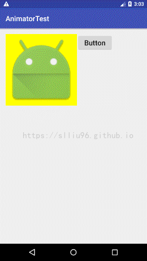

前言：最近项目中遇到了一个动画展示的需求——在不改变View的基础上，对“画布”进行动画变换，包括缩放、位移等，传统的 Animation 和 Animator 已经不能满足，于是开始着手接触 Matrix，将 Matrix 的入门知识与基础用法记录于本文。
1. Matrix初步认识
Matrix：在英语里就是矩阵的意思，在Android中可以用来对控件在屏幕上的空间位置进行设置，Matrix在Android中是一个3×3的矩阵，但是是由长度为9的一维数组表示的，可以通过getMatrix().getValues();获取一个控件的矩阵，返回值是一个float[]数组，长度为9位：
1 | float matrixValues = new float[9]; |
但是具体Matrix矩阵这个东西有什么用呢？先来看一下这个3×3矩阵在逻辑上的结构如何：

解释一下：
- MSCALE 就是缩放Scale，也就是控件的放大和缩小。
- MSKEW 就是Skew错切，是控件X（或Y）轴不变，Y（或X）轴根据比例平移形成的变化。
- MTRANS 就是Translate平移，是控件平移指定距离后的图像
- MPERSP 的原文为Perspective透视，但是没有用过，也没有找到相关资料，以后再补全。
2. Matrix的基本简介
去掉不熟悉的Perspective透视，从其他三个基本参数来看，不难看出Matrix的基本功能如下：
- Translate平移
- Scale缩放
- Skew错切
- Rotate旋转
这四种变换都分别有三种实现方式：
1 | //前乘 |
对于这三种实现方式，很多地方的解释都是从数学矩阵的角度来解释：前乘、后乘，但是对于我这种一看数学就头大的人来说，看完了也没明白是咋回事，其实非常简单，前乘就是“先做”，后乘就是“后做”，例如：
1 | //先平移，再缩放 |
这样实现的效果就是先放大再平移了，这两种方式是有区别的，在前面引用的博客中有相应的详细介绍。而设置setXXX()方式，则是先清除并重置Matrix矩阵，再进行指定变换。例如：
1 | preTranslate(x, y); |
这个变换最后实现的效果就只有：先旋转50度，再放大2倍了，因为setRotate()执行后，会先将matrix对象重置为初始的单位矩阵，然后再执行旋转50度，也即preTranslate()方法没起作用。：

前面三个都好解释，就是分别对应了三个矩阵内的元素，但是旋转怎么说？旋转的具体实现其实是直接调用Matrix的setRotate(angle)方法，其中angle代表需要旋转的角度，需要注意的是，默认的setRotate(angle)方法是顺时针转动。
3. Android动画变换与图像变换
在Android开发中，Matrix经常用来做图像的变换操作，这里要提一下所谓的图像变换。
举个例子，我们都知道当想要将一个视图旋转时，可以给这个View设置一个Animation，然后实现旋转的效果，并且能实现动态效果，能控制动画的时间、方式、多重动画或者更高级的视觉效果等，但是有时我们并不想将这个View整个一起做变换，而只是想要变化View里面包含的图像时，就可以利用这个View的Matrix来实现，举个栗子！
Demo布局很简单，就是一个ImageView以及右边一个Button，通过Button来控制动画。设置ImageView的宽高均为200dp，为了更直观的展现动画变换与图像变换的区别，给这个ImageView设置一个背景色。

如果我们用动画实现放大一倍，很简单
1 | //初始化控件 |
这样就完成了一个ImageView放大一倍的动画效果。小小地解释一下ScaleAnimation的参数：ScaleAnimation(float fromX, float toX, float fromY, float toY, int pivotXType, float pivotXValue, int pivotYType, float pivotYValue)
参数有一点多，慢慢分析：
- fromX（Y）：动画开始前X（Y）的缩放值，取1表示从当前大小开始。
- toX（Y）：动画要将控件的X（Y）缩放的值，取2表示放大到现在的两倍。
- pivotXType（pivotYType）：动画在X（Y）轴上相对控件的位置类型。说白了就是这个动画是基于哪个坐标轴进行缩放，例如上面代码用的RELATIVE_TO_SELF，代表这个缩放是基于自身的坐标轴进行的。
- pivotXValue（pivotYValue）：动画在所选坐标轴的X（Y）轴的哪个位置作为缩放原点。
看完参数，fromX（Y）和toX（Y）就很简单了，主要是解释一下后面四个，还是用例子说话。代码中，pivotXValue和pivotYValue都是0.5f，则说明是在中间位置，上面pivotType设定的是RELATIVE_TO_SELF，那么这个中间位置就是ImageView自己的中间位置了，如果上面pivotType设定的是RELATIVE_TO_PARENT，那么就是以父布局的中点作为缩放中心，在本例中父布局就是根布局，那么这个效果就是以屏幕中心作为缩放中心了，这么解释或许会比较直观。
需要说明一点的是，在Android中，默认情况下坐标原点位于控件左上角，这个位置是(0,0)，也就是说原点相对于整个控件的长度比例为0，控件的最右端为该控件在X轴上的末端，所有处在最右端的点相对于控件的长度比例是1，控件的最下端为该控件在Y轴上的末端，所有处在最下端的点相对于控件的长度比例也是1，这就解释了为什么pivotXValue和pivotYValue均设为0.5f时是以该控件中心点作为缩放中心，如果是两个0.0f，则是以左上角作为缩放中心，两个1f，则是以右下角作为缩放中心。特别强调一点，对于矩形这样的规则图形，右边一条线上的所有点X轴上长度比例都为1，但对于一个不规则图形（例如自定义View等），长度比例为1的点是位于最末端的点。
回到Demo中，做完这个动画后，我们可以看到界面的变化：

但是我们也发现，放大后的ImageView与Button已经有一部分重合了，如果是以原点为缩放中心放大的话，覆盖的范围会更大，这对于某些时候是不合我们需求的。从动画的效果上来看，我们可以把动画变换——Animation类型的变换归类为：控件视图级别的变换，也就是说ImageView设定的src资源画面的变换是基于ImageView本身的变换，再通俗一点，我们的电脑在显示一个图片，我们想要旋转这个图片，如果采用Animation的方式，旋转的实际效果是：扛着显示器旋转，而图片相对显示器是不变的。而在很多时候，我们只是想要图片本身变换，而显示器不动，这时我们就要利用控件的变换矩阵Matrix了！（终于切回正题了？）
下面是Matrix变换的代码，短短几行，先看一遍代码再来看效果如何：
1 | //ImageView的缩放类型ScaleType为Matrix时才能进行Matrix缩放 |
代码非常简单，就是创建一个Matrix对象（新的Matrix对象默认为一个单位矩阵），再设置这个matrix的参数为放大两倍，最后把matrix的效果应用到ImageView中，逻辑非常清楚。效果如何请看动图：

可以看到Android小人确实放大了两倍，但是黄色背景区域的ImageView还是原本的大小，对其他控件的控件布局没有任何影响，也完美的符合了一些情况下的需求，当然并不是说Matrix比Animation更好，只是这两者各有所长，对于一些复杂的变换、多边形等，对于Matrix来说，尽管可以通过分解的方式实现，但是工作量也会增加很多，这时就不如选择Animation来完成，还能避免一些UI线程上的错误。
同时上面的两个动图也很直观的表示了，Animation是具有动画效果的，而Matrix是一个点到点、状态到状态的变化，当我们需要一些友好的视觉效果时，单用Matrix就不能满足需求了，但是我们就毫无办法了吗？并不是的，对Android有一点了解的人应该都知道，Android实现动画的方式就是“帧播放”，也就是多个不同状态下的单个帧快速播放形成的连续画面，知道了这个原理想要实现Matrix的动画就很简单了。首先最直观的思路就是利用循环，还是以放大图片作为例子，可以先用一个while或者for包裹Matrix，然后在循环中每次放大一点点，然后sleep()一小段时间，来达到一个视觉上的模拟动画效果。但是这样的做法非常低级也很不友好，容易造成主线程阻塞，或者在循环内出现异常导致ANR（Application Not Responding程序无响应崩溃），改善这个问题的一个简单思路是利用Handler和Thread在子线程中进行处理，同时回调UI线程进行界面更新，但是这样做不仅效率低，对于应用而言也不具有美观性，因此，想要用Matrix达到Animation的效果，可以配合Android自带的一个属性动画工具：ObjectAnimator！ObjectAnimator的原理就是由你自己定义多个状态的变化趋势，然后由Android系统自动替你完成状态与状态间变化的过程，来实现动画的效果。
4. Matrix总结
上文对Matrix进行了一些基本介绍和简单的用法实例，总结一下：Matrix用来定义控件内包含画面的变换状态，相比Animation的持续动画效果来说，Matrix更加偏向于一个确定的状态，在需要连续展示一个变化过程的时候，Animation是更好的选择，而当我们只需要显示一个特定的画面状态并且不希望在改变画面时影响控件本身，就应该选择Matrix啦！同时Matrix也并不是不能实现动画效果，在我们对控件和控件内某个单独的属性需要控制时，Matrix都是非常好的选择，利用Matrix + ObjectAnimator再配合上自定义View，一样能达到非常好的动画效果！
5. ObjectAnimator——属性动画
最后，在下一篇博客中将会对ObjectAnimator做一个比较简单的介绍，详情点击：Android动画——属性动画：ObjectAnimator